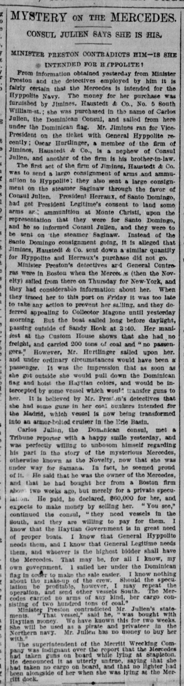
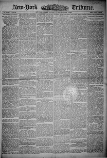

It was the Impression that as soon as she got outsideEra la impresión de que tan pronto como ella saliera afuera
New-York Tribune. New York [N.Y.], January 13, 1889. Page 1. View the originalVer el original


See the full pageVer la página completaThe New-York tribune reported on the departure of the vessel Mercedes (also known as the Novelty) for Samana with 200 tons of coal and no freight or passengers, though detectives believed it carried hidden guns for the vessel Madrid and might switch from the Dominican flag to Haytian colors. Dominican Consul Carlos Julien stated that he privately purchased the ship for $60,000 from a Boston firm and intended to sell it to the highest bidder among those needing vessels in the South, including General Hyppolite and General Legitime.El New-York tribune consignó la zarpada del buque Mercedes (llamado también Novelty) rumbo a Samaná conduciendo 200 toneladas de carbón de piedra, sin carga general ni pasaje, si bien la policía secreta presumía que ocultaba cañones para el transporte Madrid y que mudaría la bandera dominicana por los colores haitianos. El cónsul dominicano Carlos Julien manifestó haber comprado particularmente el buque a una casa de Boston por 60.000 dólares para enajenarlo al mejor postor entre quienes precisaran buques en el sur, incluyendo a los generales Hyppolite y Légitime.
FULL TEXT:TEXTO COMPLETO:
MYSTERY ON THE MERCEDES.MISTERIO EN EL MERCEDES.
CONSUL JULIEN SAYS SHE IS HIS.EL CÓNSUL JULIEN DICE QUE ES SUYO.
MINISTER PRESTON CONTRADICTS HIM—IS SHE INTENDED FOR HYPPOLITE?EL MINISTRO PRESTON LO CONTRADICE—¿ESTÁ DESTINADO A HYPPOLITE?
From information obtained yesterday from Minister Preston and the detectives employed by him it is fairly certain that the Mercedes is intended for the Hyppolite Navy. The money for her purchase was furnished by Jimines, Haustedt & Co., No. 5 South William-st.; she was purchased in the name of Carlos Julien, the Dominican Consul, and sailed from here under the Dominican flag. Mr. Jimines ran for Vice-President on the ticket with General Hyppolite recently; Oscar Hurtlinger, a member of the firm of Jimines, Haustedt & Co., is a nephew of Consul Julien, and another of the firm is his brother-in-law.De información obtenida ayer del Ministro Preston y los detectives empleados por él es bastante cierto que el Mercedes está destinado a la Marina de Hyppolite. El dinero para su compra fue suministrado por Jimines, Haustedt & Co., No. 5 de la calle South William; fue comprado a nombre de Carlos Julien, el Cónsul dominicano, y zarpó de aquí bajo la bandera dominicana. El Sr. Jimines corrió para Vicepresidente en la boleta con el general Hyppolite recientemente; Oscar Hurtlinger, un miembro de la firma de Jimines, Haustedt & Co., es sobrino del Cónsul Julien, y otro de la firma es su cuñado.
The first act of the firm of Jimines, Haustedt & Co. was to send a large consignment of arms and ammunition to Hyppolite; they also sent a large consignment on the steamer Saginaw through the favor of Consul Julien. President Herraux, of Santo Domingo, had got President Legitime's consent to land some arms and ammunition at Monte Christi, upon the representation that they were for Santo Domingo, and he so informed Consul Julien, and they were to be sent on the steamer Saginaw. Instead of the Santo Domingo consignment going, it is alleged that Jimines, Haustedt & Co. sent down a similar quantity for Hyppolite and Herraux's purchase did not go.El primer acto de la firma de Jimines, Haustedt & Co. fue enviar un gran envío de armas y municiones a Hyppolite; también enviaron un gran envío en el vapor Saginaw a través del favor del Cónsul Julien. El presidente Herraux, de Santo Domingo, había obtenido el consentimiento del presidente Legitime para desembarcar algunas armas y municiones en Monte Christi, bajo la representación de que eran para Santo Domingo, y así lo informó al Cónsul Julien, y habían de ser enviadas en el vapor Saginaw. En lugar de ir el envío de Santo Domingo, se alega que Jimines, Haustedt & Co. enviaron una cantidad similar para Hyppolite y la compra de Herraux no fue.
Minister Preston's detectives and General Contreras were in Boston when the Mercedes (then the Novelty) sailed from there on Thursday for New-York, and they had considerable information about her. When they traced her to this port on Friday it was too late to take any action to prevent her sailing, and they deferred appealing to Collector Magone until yesterday morning. But the boat sailed long before daylight, passing outside of Sandy Hook at 3:40. Her manifest at the Custom House shows that she had no freight, and carried 200 tons of coal and "no passengers." However, Mr. Hurtlinger sailed upon her, and under ordinary circumstances would have been a passenger. It was the impression that as soon as she got outside she would pull down the Dominican flag and hoist the Haytian colors, and would be intercepted by some vessel which would transfer guns to her. It is believed by Mr. Preston's detectives that she had some guns in her coal bunkers intended for the Madrid, which vessel is now being transformed into an armor-belted cruiser in the Erie Basin.Los detectives del Ministro Preston y el general Contreras estaban en Boston cuando el Mercedes (entonces el Novelty) zarpó de allí el jueves para Nueva York, y tenían información considerable sobre él. Cuando lo rastrearon hasta este puerto el viernes era demasiado tarde para tomar acción alguna para prevenir su salida, y difirieron apelar al Recaudador Magone hasta ayer por la mañana. Pero el bote zarpó mucho antes del amanecer, pasando fuera de Sandy Hook a las 3:40. Su manifiesto en la Aduana muestra que no tenía carga, y llevaba 200 toneladas de carbón y «ningún pasajero». Sin embargo, el Sr. Hurtlinger navegó en él, y bajo circunstancias ordinarias habría sido un pasajero. Era la impresión de que tan pronto saliera bajaría la bandera dominicana e izaría los colores haitianos, y sería interceptado por algún buque que le transferiría cañones. Los detectives del Sr. Preston creen que tenía algunos cañones en sus carboneras destinados al Madrid, cuyo buque está siendo transformado ahora en un crucero de cinturón blindado en el Erie Basin.
Carlos Julien, the Dominican consul, met a Tribune reporter with a happy smile yesterday, and was perfectly willing to unbosom himself regarding his part in the story of the mysterious Mercedes, otherwise known as the Novelty, now that she was under way for Samana. In fact, he seemed proud of it. He said that he was the owner of the Mercedes, and that he had bought her from a Boston firm about two weeks ago, but merely for a private speculation. He paid, he declared, $60,000 for her, and expects to make money by selling her. "You see," continued the consul, "they need vessels in the South, and they are willing to pay for them. I know that the Haytian Government is in great need of proper boats. I know that General Hyppolite needs them, and I know that General Legitime needs them, and whoever is the highest bidder shall have the Mercedes. That may be, for all I know, my own government. I sailed her under the Dominican flag in order to make the sale easier. I know nothing about the make-up of the crew. Should the speculation be profitable, however, I may repeat the operation, and send other vessels South. The Mercedes carried no arms of any kind, her cargo consisting of two hundred tons of coal."Carlos Julien, el cónsul dominicano, recibió a un reportero del Tribune con una sonrisa feliz ayer, y estaba perfectamente dispuesto a desahogarse respecto a su parte en la historia del misterioso Mercedes, también conocido como el Novelty, ahora que estaba en camino a Samaná. En efecto, parecía orgulloso de ello. Dijo que era el propietario del Mercedes, y que lo había comprado a una firma de Boston hace unas dos semanas, pero meramente para una especulación privada. Pagó, declaró, $60,000 por él, y espera ganar dinero vendiéndolo. «Verá», continuó el cónsul, «necesitan buques en el Sur, y están dispuestos a pagar por ellos. Sé que el Gobierno haitiano tiene gran necesidad de botes apropiados. Sé que el general Hyppolite los necesita, y sé que el general Legitime los necesita, y quien sea el mayor postor tendrá el Mercedes. Ese puede ser, por lo que sé, mi propio gobierno. Lo navegué bajo la bandera dominicana para hacer la venta más fácil. No sé nada sobre la composición de la tripulación. Si la especulación resulta provechosa, sin embargo, puede que repita la operación, y envíe otros buques al Sur. El Mercedes no llevaba armas de ninguna clase, su carga consistiendo de doscientas toneladas de carbón.»
Minister Preston contradicted Mr. Julien's statements. "That vessel," said he, "was bought with Haytian money. We have known this for two weeks. She will be used as a pirate and privateer in the Northern navy. Mr. Julien has no money to buy her with."El Ministro Preston contradijo las declaraciones del Sr. Julien. «Ese buque», dijo, «fue comprado con dinero haitiano. Lo hemos sabido desde hace dos semanas. Será usado como pirata y corsario en la marina del Norte. El Sr. Julien no tiene dinero para comprarlo.»
The superintendent of the Merritt Wrecking Company was indignant over the report that the Mercedes had taken guns on board while lying at Stapleton. He denounced it as utterly untrue, saying that she had taken no cargo on board, and that no lighter had been alongside of her when she was lying at the Merritt dock.El superintendente de la Compañía de Salvamento Merritt estaba indignado por el informe de que el Mercedes había tomado cañones a bordo mientras estaba en Stapleton. Lo denunció como completamente falso, diciendo que no había tomado carga alguna a bordo, y que ningún lanchón había estado junto a él cuando estaba en el muelle Merritt.